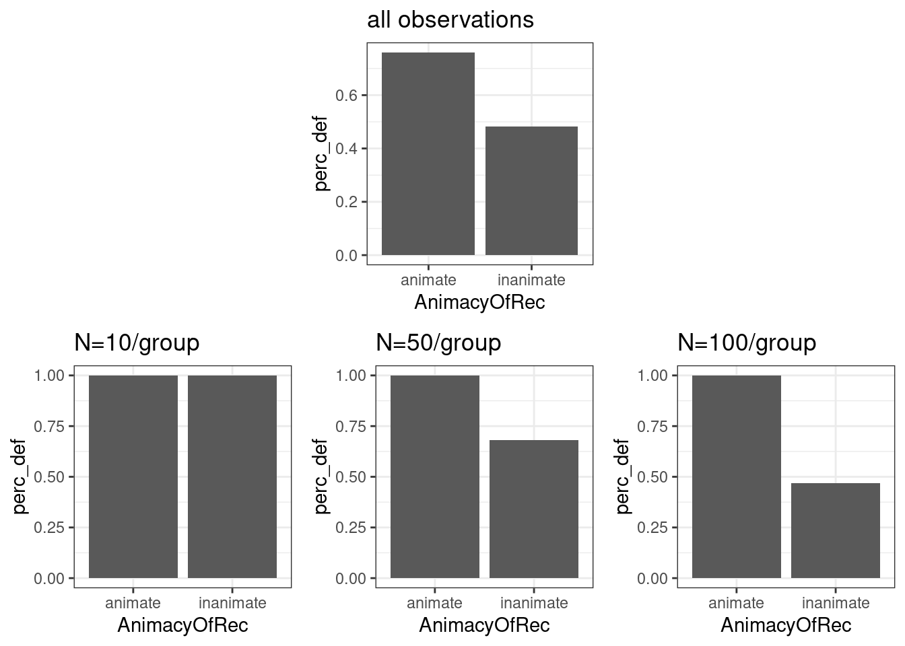

Chapter 7 Samples, Populations and Probability
7.1 The Dative Verbs Data Revisited
Remember our friend below? \[ \underbrace{y_i}_{\text{Observed value}} = \overbrace{\underbrace{a}_{\text{Intercept}}}^{\text{additive term}} + \overbrace{\underbrace{b_1}_{\text{Slope}} * \underbrace{{x_1}_i}_{Predictor}}^{\text{additive term}} + \overbrace{\underbrace{b_2}_{\text{Slope}} * \underbrace{{x_2}_i}_{Predictor}}^{\text{additive term}} + \ldots + \underbrace{\epsilon_i}_{Error}\]
- In the last few weeks we talked about linear models and how we can use ther coefficients (intercept and slopes) to characterize our findings in a particular sample.
- We also discussed the presence of errors.
- When a linear model can describe the data perfectly, such as in the dative data set, or the taxi data when all predictors are known, we can can find coefficients that reduce the error term to 0.
- We can interpret the result as an exact characterization of the dependent variable for any combination of predictor values.
- When a linear model cannot describe the data perfectly because some predictors aren’t known, we can find coefficients that minimize the error term (but don’t make it zero).
- We can interpret the result as an characterization of the average of the dependent variable for any combination of predictor values.
- When a linear model can describe the data perfectly, such as in the dative data set, or the taxi data when all predictors are known, we can can find coefficients that reduce the error term to 0.
This is all nice. But what do all those fancy numbers like averages and coefficients mean beyond a characterization of the sample?
Let’s compare the difference between animate and inanimate in the full data set to the effect in the 10, 50, 100, 500 first rows corresponding to each class (animate and inanimate; i.e., 20, 100, 200, 1000 rows in total).
library(languageR)
# average over all instances
df1 <- dative %>% group_by(AnimacyOfRec) %>% summarize(perc_def = mean(RealizationOfRecipient=="NP"))
p1 <- df1 %>% ggplot(aes(AnimacyOfRec, perc_def)) + geom_bar(stat="identity")
# average over the first N instances
df2 <- dative %>% group_by(AnimacyOfRec) %>% summarize(perc_def = mean(RealizationOfRecipient[1:10]=="NP"))
p2 <- df2 %>% ggplot(aes(AnimacyOfRec, perc_def)) + geom_bar(stat="identity")
df3 <- dative %>% group_by(AnimacyOfRec) %>% summarize(perc_def = mean(RealizationOfRecipient[1:50]=="NP"))
p3 <- df3 %>% ggplot(aes(AnimacyOfRec, perc_def)) + geom_bar(stat="identity")
df4 <- dative %>% group_by(AnimacyOfRec) %>% summarize(perc_def = mean(RealizationOfRecipient[1:100]=="NP"))
p4 <- df4 %>% ggplot(aes(AnimacyOfRec, perc_def)) + geom_bar(stat="identity")
ggarrange(NULL, p1+ggtitle("all observations"), NULL, p2+ggtitle("N=10/group"), p3+ggtitle("N=50/group"), p4+ggtitle("N=100/group"), ncol = 3, nrow =2)
The differences between 0.28 (all), 0 (N=10), 0.32 (N=50), 0.53 (N=100). Which one is ‘right’?
The key to answering this question is in understanding what we mean by ‘right’.
The brief answer is that all of them are probably wrong, but the ones with bigger \(N\)s are more likely to be closer to the ‘truth’.
7.2 Populations and Samples
- In most research common in (psycho-)linguistics, we aren’t really interested in the particular sample as such.
We are interested in using it to find out something more general.
- Population: The group to which we wish to generalize.
- We will refer to chracterizations of the population as parameters (\(\theta\), \(\alpha\), \(\beta\), …).
- The research question is typically about the population.
- Sample: A subset of the population.
- We will refer to chracterizations of a sample as statistics (\(\widehat{\theta}\), \(\widehat{\alpha}\), \(\widehat{\beta}\), …).
- Our data is usually a sample of that population.
- The expression popularized by Mark Twain “There are three kinds of lies: lies, damned lies, and statistics.” refers to exactly these kinds of statistics, not the scientific discipline of statistics.
- Statistical Inference
- Statistical inference is about making inferences about parameters, based on statistics.
- In our dative data set, our main interest is not in whether the animacy of the recipient is associated with …
- … a change in the percentage of the realization of default word order in the sample (\(\widehat{P_{def,+anim}}\), \(\widehat{P_{def,-anim}}\)) …
- … a change in the probability of the realization of default word order, in general (\(P_{def,+anim}\), \(P_{def,-anim}\))
- It is key to understand that they are not the same, but that they are related.
7.2.1 Examples
- Let’s consider the following research questions, how we would go about solving them, and what would constitute the statistics and the population parameters in these cases.
- Does speed-reading work? (Note: It doesn’t. Not at all.)
- Is the buttered toast phenomenon really true?
- Does topicality of the object increase the likelihood of OVS word order in German?
- Do taller people have deeper voices?
7.3 The Role of Statistical Models
- So, we’ve seen that we’re actually interested in population parameters. Great. How do we find out what they are?
- In order to do that, we’ll first need to understand the relationship between statistics and population parameters, and this is exactly statistical models are for.
- But in order to understand statistical models, we will first need to talk about probability.
7.4 Probability
7.4.1 Examples of Probabilistic Statments
- A fair coin will come up heads 50% of the time.
- The probability of rain tomorrow is 30%.
- It is very unlikely that I’ll fail that exam.
- The probability of throwing a 1 with a (fair) six-sided die is 1/6.
7.4.2 The Notion of Probability
- It is difficult to exactly define probability without using synonyms, although most of us have some sort of intuition of what it is.
- It is a number that follows certain laws, which could be argued to encode common sense applied to numbers when the system producing them is not predictable, or doesn’t seem to be predictable with our current state of knowledge.
7.4.2.1 1. Classical Probability
Equal probabilities assigned to theoretically equally likely events (e.g., heads or tails).
- Probability of more complex events defined by ‘the number of ways’ that lead to their realization.
- Example: What is the probability of a fair coin, tossed twice, will come up heads exactly once?
- There are two equi-probable ways in which this can happen the total number of events that can occur is 4, and so the probability is 0.5.
- Example: What is the probability of a fair coin, tossed twice, will come up heads exactly once?

- Works well for simple examples (marbles, dice, cards, etc), where the set of all possible events can be decoposed into equally likely events. For example:
- ‘probability of a coin coming up heads, then tails’
- ‘probability of throwing a 1,2, and a 3 in succession with a six-sided die’
- Much more difficult to apply to more complex ones. For example:
- ‘probability of rain on two successive days’ (what could the equally likely events be, and how do they change from day to day?)
7.4.2.2 2. Frequentist Probability
Probabilies are (relative) frequencies of events in hypothetical, infinite sequences of experiments (situations in which events may or may not occur).
P(A), the probability of an event A, is the proportion of times that A occurs in such a sequence. Importantly, it’s going to be the same proportion every time.
In other words, an event’s has a probability of occuring impacts its long-term frequency.
Example: ‘probability of a biased coin coming up heads (\(p_H=0.6\))’, ‘probability of rain on two successive days’
How do we deal with ‘the probability of rain tomorrow’, or ‘probability that Donald Trump will be re-elected’, or ‘the probability that this mushroom is poisonous’?
7.4.2.3 3. Bayesian Probability
Both of the previous conceptualizations of probability are objective: they are about ‘a true state of the world’.
The last examples do not really have a probability under those interpretations. (Unless you subscribe to a multiverse-interpretation.) They are either true or false. Yet these expressions somehow make sense to us.
We can also conceptualize probability as a degree of belief. Sounds silly? - We use it in that way all the time.
For example, in 2004-2005, a group of experts estimated the probability of the deployment of a nuclear weapon in the next 10 years to be \(50\)%. What did they mean?
We may differ in the probabilities that we assign to an event, based on our state of knowledge about the problem.
7.4.3 The Laws of Probability
Whatever interpretation we assign probabilities, they must follow certain laws in order to be useful. It could be argued that the laws essentially to encode common sense applied to numbers.
For any event A, the probability of A, written as P(A), is a number between 0 and 1.
Law of total probability: The probabilities of all possible events must sum to to 1.
Law of complements: The probabilities of an event occuring and an event not occuring must sum 1.
7.4.3.1 Examples
…
…
…
7.4.3.2 Independent events
- Independent events:
- Events for which the probability of the occurrence of one of them (\(A_1\)) does not depend on whether or not the other one (\(A_2\)) has occurred or will occur.
- For two independent events \(A_1\) and \(A_2\), the probability of both events occurring (the joint probability of \(A_1\) and \(A_2\)) is the product of their probabilities: \[P(A_1, A_2) = P(A_1) \cdot P(A_2)\]
7.4.3.3 Examples
- A fair coin coming first heads, then tails.
- Rain in Istanbul, and Rain in Sydney
- … can you think of other examples?
7.4.3.4 Mutually exclusive events
- Mutually exclusive events: Events that cannot happen at the same time.
- Can be a logical contradiction, like a 6-sided die coming up with an even number (\(A_1\)) and coming up ‘3’ (\(A_2\)).
- Events can also be mutually exclusive without being a logical contradiction: For example, reporting feeling happy and sad at the same time. (But mutually exclusive events will always be in contradiction vis á vis the system that generates the events.)
- Additive law of probability: For two any events \(A_1, A_2\), the probability that one of the events occurs is:
\[P(A_1~or~A_2) = P(A_1) + P(A_2) - P(A_1~and~A_2)\]
- Special case: For two mutually exclusive events \(A_1, A_2\) the probability that one of the events occurs is the sum of their probabilities: \[P(A_1~or~A_2) = P(A_1) + P(A_2)\]
7.4.3.5 Examples
- A coin coming up heads and tails at the same time.
- Heavy rain in Istanbul for more than a day, and no flooding in Istanbul
- … can you think of other examples?
7.4.3.6 Conditional probability
Conditional probability: The conditional probability of event \(A_1\) given event \(A_2\) is the probability that event \(A_1\) will occur (or has occured), given that \(A_2\) has occured (or will occur).
Definition of conditional probability: For two events, the conditional probability \(P(A_1|A_2)\) is \(P(A_1,A_2) / P(A_2)\).
Special case 1: For two independent events, the conditional probability \(P(A_1|A_2) = P(A_1)\).
Special case 2: For mutually exclusive events, the conditional probability \(P(A_1|A_2) = 0\).
7.4.3.7 Examples
- The probability of having a disease given that a test says so
- The probability of a test saying that you have a disease given that you do